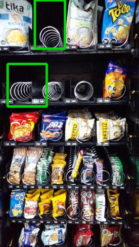
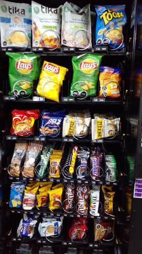

Antes de AbastecerSe detectaron 2 espirales vacios.

id 401.583 |
Luego de AbastecerNo se detectaron espirales vacios.

id 401.584 |
|
| Fecha |
Reporte |
Vacios ANT |
% Abast |
% Quiebre |
Sum QTY |
Rotación Diaria |
Abast hace (días) |
| 09-08-2021 |
Viendo |
2 |
11.3 |
5.0 |
53 |
13 |
4 |
| 05-08-2021 |
Ver |
0 |
6.4 |
0 |
30 |
10 |
3 |
| 02-08-2021 |
Ver |
2 |
12.2 |
5.0 |
57 |
14 |
4 |
| 29-07-2021 |
Ver |
0 |
11.5 |
0 |
54 |
18 |
3 |
| 26-07-2021 |
Ver |
0 |
2.1 |
0 |
10 |
2 |
4 |
| 22-07-2021 |
Ver |
2 |
7.9 |
5.0 |
37 |
12 |
3 |
|
|
|
Se abasteció la máquina con:
Total de 53 unidades de 4 productos.
| Qty. |
Producto |
SubFamilia |
Familia |
| 10 |
Snickers 53 Grs |
Chocolates |
Snack |
| 18 |
Papas Fritas Tika Patagon |
Salados |
Snack |
| 10 |
Papas Fritas Lays Evercri |
Salados |
Snack |
| 15 |
Papas Mediterraneas Orega |
Snack |
Snack |
| Productos más abastecidos en últimas 6 semanas:
| Nro. Abast |
Qty/Abast |
Producto |
Abast hace (días) |
Fecha |
| 7 |
11 |
Mini Selz 45 Gr |
4 |
05-08-2021 |
| 7 |
10 |
Papas Fritas Lays Evercri |
0 |
09-08-2021 |
| 5 |
16 |
Alfajor Bon O Bon Dos En |
4 |
05-08-2021 |
| 5 |
15 |
Papas Mediterraneas Orega |
0 |
09-08-2021 |
| 4 |
24 |
Super Ocho Clasico 24 Gr |
11 |
29-07-2021 |
| Productos menos abastecidos en últimas 6 semanas:
| Nro. Abast |
Qty/Abast |
Producto |
Abast hace (días) |
Fecha |
| 1 |
18 |
Papas Fritas Tika Patagon |
0 |
09-08-2021 |
| 2 |
10 |
Ramitas Queso Evercrisp |
32 |
08-07-2021 |
| 2 |
10 |
Papas Mediterraneas Jamon |
32 |
08-07-2021 |
| 2 |
10 |
Galleton Avena Y Pasas 60 |
32 |
08-07-2021 |
| 2 |
10 |
Galleta Digestive Sin Azu |
32 |
08-07-2021 |
|
|